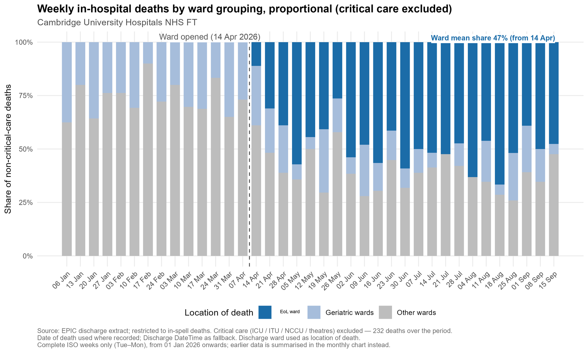
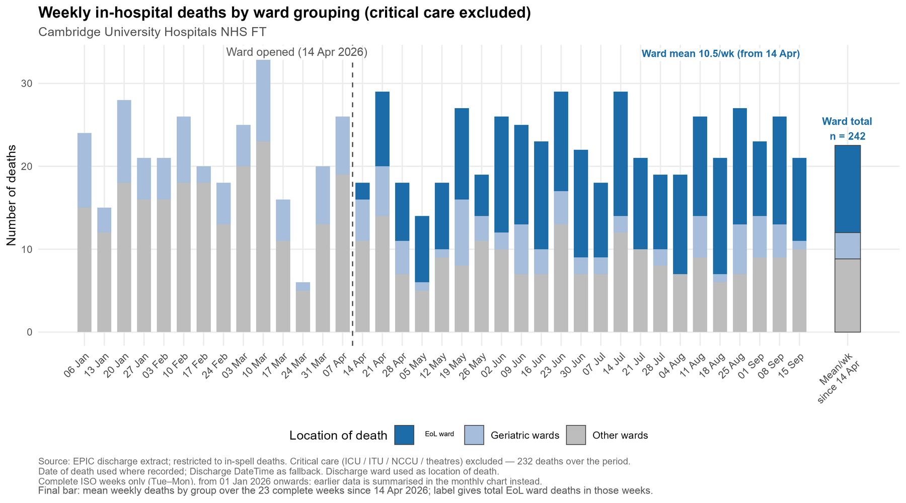
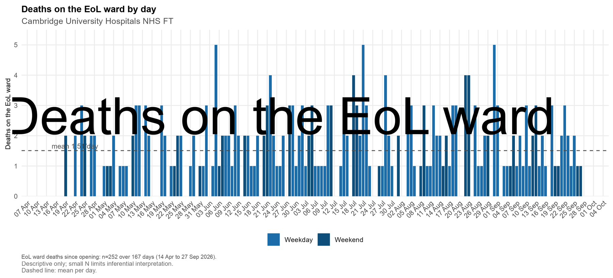
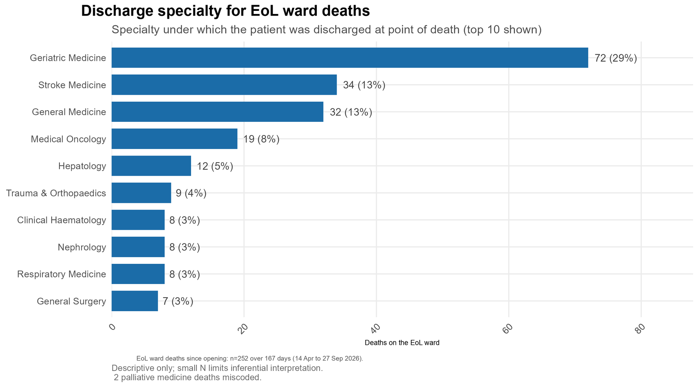
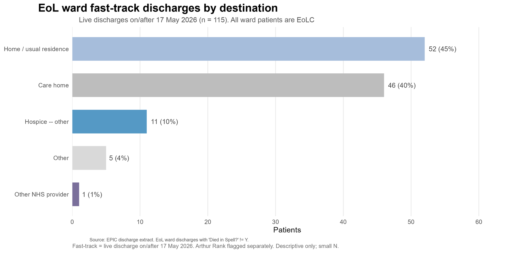
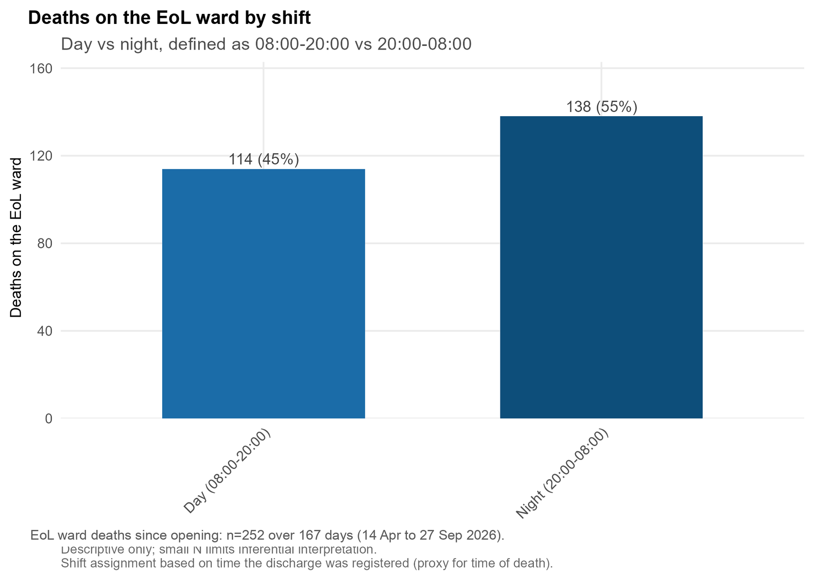
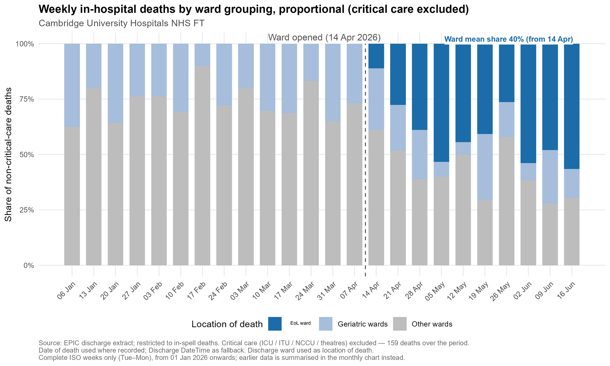

Where people die is changing: figures updated to 27 September 2026
The accepted abstract described the first eleven weeks of a dedicated nurse-led end-of-life care ward (14 April to 28 June 2026). This page carries the same descriptive analysis rerun on data to 27 September 2026, so that readers of the poster can see how the picture has developed over 24 weeks. Cambridge University Hospitals NHS Foundation Trust; registered service evaluation PRN8341.
Abstract figures and updated figures
| Measure | Abstract (to 28 Jun 2026) | Updated (to 27 Sep 2026) |
|---|---|---|
| Deaths on the ward | 49 in the first 49 days | 252 in 167 days (mean 1.5 per day) |
| Share of non critical care in-hospital deaths | mean 32% of all deaths; up to 44% of non critical care deaths | mean 47% of non critical care deaths since opening |
| Trust-wide weekly deaths | within historical range | within historical range (14 to 29 per week) |
| Largest referring specialties | geriatric medicine 29%, stroke 22%, general medicine 10% | geriatric medicine 29%, stroke 13%, general medicine 13%, oncology 8% |
| Fast-track discharges | about 20; 55% home, 40% care home | 115 since 17 May; 45% home, 40% care home, 10% hospice |
| Deaths by shift (day 08:00 to 20:00) | 57% day, 43% night | 45% day, 55% night |
The day and night split differs between the two runs because the updated analysis assigns shift from the time the discharge was registered, which is a proxy for the time of death and can fall some hours later. The abstract figure used the recorded time of death where available. Treat the split as approximate.
Updated charts






Abstract-period chart, for comparison
